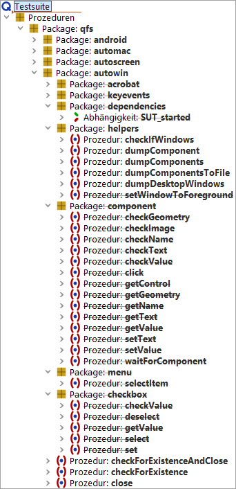

| Version 6.0.3 |
Die Microsoft UI Automation ist ein Accessibility- und Test-Framework, das den programmatischen
Zugriff auf GUI Elemente von nativen Windows Anwendungen erlaubt. In QF-Test
kann dieses Framework in Skriptknoten über das Jython Modul uiauto angesprochen werden
(alternativ de.qfs.UIAuto für Groovy, uiauto für Javascript).
Zur direkten und einfachen Nutzung für die Testerstellung bietet QF-Test in der Standardbibliothek ein Package, das QF-Test-Prozeduren für häufig benötigte Interaktionen mit GUI-Elementen zur Verfügung stellt. Dieses wird im Folgenden beschrieben.
Die für die Ansteuerung von nativen Windows Elementen relevanten Prozeduren
befinden sich im Package qfs.autowin. Sie sehen in dem Package
etliche Prozeduren, die als überholt (deprecated) gekennzeichnet sind. Diese sind durch
normale Knoten der win Engine von QF-Test abgelöst worden und werden nicht mehr
weiterentwickelt. Dies bezieht sich zum Beispiel auf Themen bei der Bildschirmskalierung.
Prinzipiell können Sie die Prozeduren so wie sie sind weiter verwenden. Wenn
es aber zu Problemen kommt, dann ist es empfehlenswert auf die win Engine umzusteigen.
|
|  | ||
|
| Abbildung 48.1: UI Automation Prozeduren in der Standardbibliothek | ||
Die grundsätzliche Vorgehensweise bei der Erstellung von Tests für native Windows Anwendungen ist folgende:
Die zu testende Anwendung kann, muss aber nicht, über QF-Test gestartet werden.
Wenn die Anwendung über QF-Test gestartet wird, erscheint der gestartete Prozess in der Liste der QF-Test-Clients im Menü »Clients« und auch die Beendigung des Prozesses durch QF-Test ist möglich.
Zur Prüfung, ob die zu testende Anwendung gestartet ist, wird die Prozedur
qfs.autowin.checkForExistence verwendet.
Ein Beispiel zum Anwendungsstart finden Sie in Abschnitt 48.2.1.
Bevor Tests erstellt werden können, ist es notwendig, sich einen Überblick über
die in der Anwendung vorhandenen GUI-Elemente zu verschaffen. Hierzu stehen
die Prozeduren qfs.autowin.helpers.dumpComponents und
qfs.autowin.helpers.dumpComponentsToFile zur Verfügung.
Diese listen die GUI-Elemente für das angegebene Fenster auf. Erstere gibt
das Ergebnis im QF-Test-Terminal, letztere in eine Datei aus.
Mit der Prozedur qfs.autowin.helpers.dumpDesktopWindows
können die Titel der aktuell geöffneten Windows Fenster
ausgegeben werden.
qfs.autowin.helpers.dumpComponents gibt den Namen (Name),
die Klasse (ClassName), den Komponententyp
(ControlType) und die Id (AutomationId) des GUI-Elements aus, soweit diese für
das GUI-Element implementiert wurden.
Alle auf dem Desktop sichtbaren GUI-Elemente sind in einer Baumstruktur organisiert, mit dem Desktop als Wurzelelement. Im Aufruf der Dump-Prozedur wird das gewünschte Fenster angegeben. Die Verschachtelung der GUI-Elemente wird in der Ausgabe mittels Einrückungen dargestellt.
Hinweis Die Ausgabe der Prozedur dumpComponents() wird im QF-Test-Terminal, das standardmäßig unten im QF-Test-Fenster angezeigt wird, ausgegeben. In den Terminals, die separat geöffnet werden können, wird das Ergebnis dieses Dump-Befehls nicht angezeigt.
Ein Beispiel finden Sie in Abschnitt 48.2.2.
In der Standardbibliothek steht die Prozedur
qfs.autowin.helpers.dumpComponent zur Verfügung,
um sich zu einem einzelnen GUI-Element weitere Informationen ausgeben zu lassen.
Dies umfasst die Liste der zur Verfügung stehenden Methoden sowie einzelne Attributwerte.
Alle in der Standardbibliothek für die Ausführung von Aktionen auf nativen
Windows Anwendungen zur Verfügung gestellten Prozeduren ermitteln im ersten
Schritt das jeweilige GUI-Element und führen dann die entsprechende Aktion
darauf aus. Diese sind im Package qfs.autowin.component zusammengefasst.
Das GUI-Element wird über die Prozedur qfs.autowin.component.getControl ermittelt.
Die Parameter dieser Hilfsprozedur gelten daher für alle Prozeduren, die
eine Aktion auf einem GUI-Element ausführen.
Folgende Parameter(-kombinationen) sind möglich (in der Reihenfolge der Auswertung):
qfs.autowin.helpers.dumpComponent
zeigt den Namen und den numerischen Wert des jeweiligen ControlTypes an.
Um ein GUI-Element an Hand seines ControlTypes zu identifizieren, muss entweder
der Name oder der Index, bezogen auf den ControlType, zusätzlich angegeben werden,
außer es gibt im Fenster nur ein GUI-Element dieses ControlTypes.
Für die häufigsten Aktionen finden Sie vorgefertigte Prozeduren in der
Standard-Bibliothek qfs.qft im Package qfs.autowin.component.
Sie können das Package
nach Belieben unter Verwendung des Jython-Moduls "uiauto" erweitern. Hierbei
empfiehlt es sich, die Erweiterungen nicht direkt in der qfs.qft vorzunehmen,
da wir die Standardbibliothek kontinuierlich weiterentwickeln und mit jeder
QF-Test Version neu ausliefern.
qfs.autowin.component.click
qfs.autowin.component.waitForComponent
qfs.autowin.checkForExistence
qfs.autowin.component.setText
qfs.autowin.keyevents stehen Prozeduren für das Abspielen der Tastatur-Events
ENTER, TAB und DELETE zur Verfügung. Über die Prozedur
qfs.autowin.keyevents.sendKey können einzelne
Tastatureingaben, auch in Kombination mit Strg, Alt und der Umschalttaste, erfolgen,
z.B. einzelne Buchstaben, Ziffern, Funktionstasten. Die Eingabe
geht auf die Komponente, die im angegebenen Fenster den Fokus hat.
qfs.autowin.component.getText
qfs.autowin.component.getGeometry
qfs.autowin.component.checkText
qfs.autowin.component.getGeometry
qfs.autowin.component.checkImage
qfs.autowin.component.getGeometry werden die
Bildschirmkoordinaten des zu prüfenden Bereichs ermittelt. Die eigentliche
Prüfung wird über die Prozedur getPositionOfImage()
aus dem Package qfs.autoscreen der Standardbibliothek durchgeführt. qfs.autowin.menu.selectItem
| Letzte Änderung: 6.9.2022 Copyright © 1999-2022 Quality First Software GmbH |